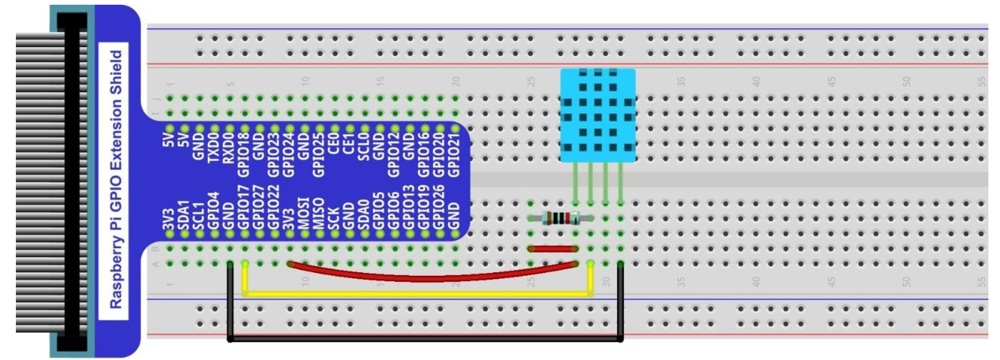

The project collects temperature and humidity data from DHT11 sensor with Raspberry Pi.
Sensor is built to as image below.

Temperature and humidity data is also obtained from website for comparision purpose.
These data is obtained via BeautifulSoup
The procedure is repeated via crontab on Raspberry Pi.